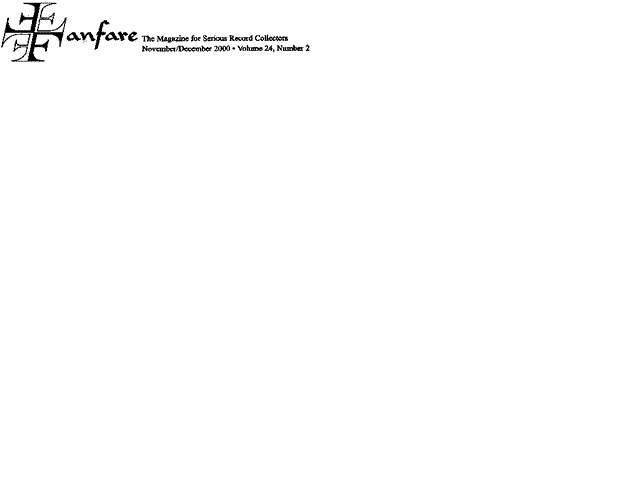

|

REVUE DE PRESSE

Fanfare August-September 2005
Timing is everything. Nicholas Angelich has the fingers for Liszt, and he is not without ideas. A prodigy and prizewinner, his education includes study with several outstanding artists—Ciccolini, Loriod, Béroff, Fleisher, Pires. His musical interests are admirably wide. His career is blossoming. And his go at the Années has already met with critical acclaim in Europe, which, one hopes, will open to him the further exposure his talents deserve. On the other hand, with Mûza Rubackyté (say roo-bahts-skee-tay), whose traversal of the Années followed Angelich’s by a matter of months, we’re not talking prizes, talent, or promise but a milestone release by one of the world’s great pianists, a compleat artist, and a born Liszt player—comparisons are revealing. Listening to Angelich, we think how well he plays. And the upfront, uncramped immediacy of his aural capture wings his flair. Chez Rubackyté, we forget the piano as the sounds dissolve into a prehension of Liszt’s spiritual world—those melancholy cypresses of the Villa d’Este, or the ecstasy of its fountains’ play, homesickness and distant bells, the storm’s rush and the impassioned soliloquy of the nameless narrator of Obermann’s Valley, the nympholeptic trance engendered by a lovely face thrice rendered by the Petrarch Sonnets, and so on. Angelich seldom touches this realm. Indeed, he never allows you to forget how well he’s playing through pointlessly distended accounts of Chapelle de Guillaume Tell, Sonetto 123, the Dante Sonata, or the Prière aux anges gardiens, among others, labored by generic sensitivity and gravid pauses portending… nothing. Take the last. Though deeply felt, the Prière, from Liszt’s old age in Rome, is not one of his stronger pieces—Angelich knows this and feels obliged to “make something of it,” but his sanctimonious plodding and search for deep meaning in every phrase simply highlight its weaknesses, where Rubackyté, without hustle, moves things along in a projection of its overall shape as a blithe orison rising to an impassioned climax to fade away as if concentration had been lost, as its conclusion suggests. Rubackyté gives us a human document shot through with charm, freshness, and the near-vocal gestures of prayer where Angelich maunders through ten minutes of cluelessness. But, then, very few pianists have divined the alternately haunted and Grace-rife world of the Troisième Année with the sure touch Rubackyté brings to it. And speaking of touch, it must be said that beside her deft fluency in the most demanding passages, tonal finesse, and glowing color, Angelich’s Big Technique seems a blunt instrument. He’s better than that, but comparisons are apt to be invidious. Both productions are attractively packaged, and if you can’t get Lyrinx domestically (distribution’s been haphazard) try one of the overseas dealers who advertise at the back of the magazine. Lyrinx has provided Rubackyté with state-of-the-art sound, placing her astounding tonal palette in the porches of your ears, quite as if you were on stage with her in Marseillais’s Salle Blachière. Not yet equipped with surround sound, I can only guess what more these already superb hybrids may reveal. Angelich cannot be denied a recommendation, but Mûza Rubackyté’s Années are primary—an unique and indispensable transport to the heart of Liszt country.